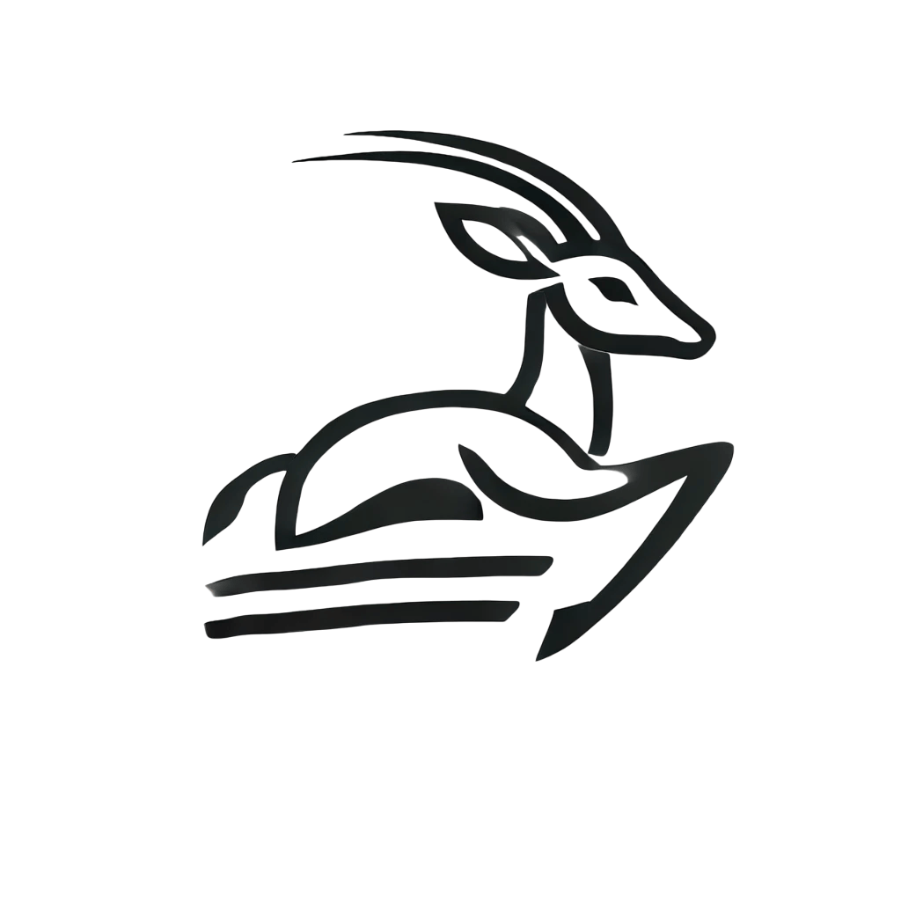

Antelop
A user-friendly software package for systems neuroscience data management
Big data in neuroscience
- New technologies such as Neuropixels allow us to record an increasingly high number of units
- Continual shift towards more automated behavioural assays means longer/more recordings
- Scientists have to spend more time on data processing workflows and data management
- Increasingly advanced skills are needed to undertake this (HPC skills, data engineering, etc.)
Data engineering challenges
- Custom file formats/project structures are hard to parse
- Custom preprocessing/analysis scripts are very difficult to reproduce
- Lab data storage not centralised
- High entry barrier to existing tools like DataJoint and NWB which makes their adoption difficult for many labs
Our solution: Antelop
- Software package designed to facilitate the easy adoption of data processing and storage best practices
- Simple pip install and straightforward graphical configuration
- Extensive graphical user interface for all aspects of your data management and processing
- MySQL database backend for centralised storage
- Supports electrophysiology, calcium imaging, and behavioural data processing with HPC integration

Our solution: Antelop
- Integrates with existing tools, such as popular spikesorters, CaImAn, and DeepLabCut
- Leverages the fact that preprocessing requirements for common acquisition methods are fairly uniform
- Implements a range of data visualisation tools and metrics out of the box, including an analysis standard library
- Supports the writing of custom analysis scripts, with direct integration to your lab’s GitHub and data immutability checks for reproducibility
- Has import/export functions for NWB and a range of acquisition systems
- Has a strictly structured but accomodating database structure for analysis routines to utilise
Infrastructure

Data analysis potential

- Antelop can be used to curate a large database of paired neural activity and environmental events for a domain of interest (eg Hippocampus and spatial navigation tasks)
- This facilitates the use of large scale multi-recording analyses
- For example: neuroscience foundation models
- Neural nets trained via self-supervised learning to model the relationship between activity and the environmental factor of interest
- Can be fine-tuned on a number of sub-tasks such as decoding a quantity of interest
How to represent a complex environment?

How to represent a complex environment?
- Environmental arrays split into four different types
- Each contains NumPy arrays with a strict structure, metadata, and common clock with neural activity
- All data belongs to the environment (which belongs to a recording session, experimenter, etc.)
- Environments can have one or more subject
- Optionally, data can also belong to a subject
Publishing
- Working on a preprint at present
- We aim to publish by May this year
- Python package has been released but is undergoing extensive testing
- Docs available
Thank you